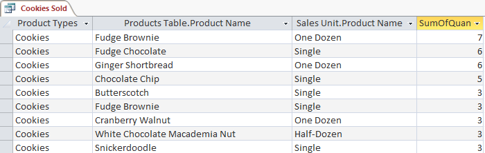
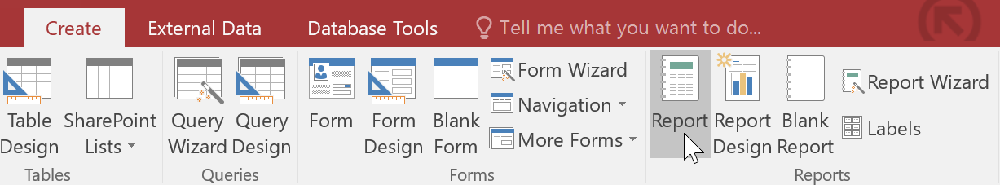
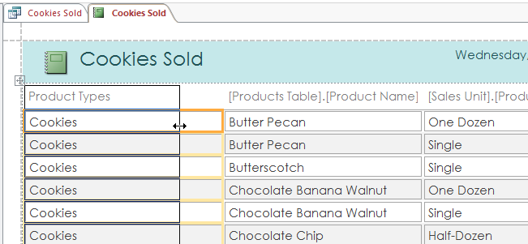
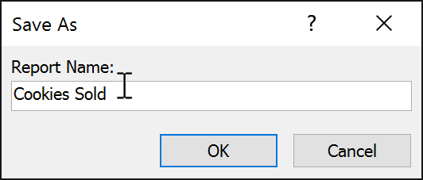
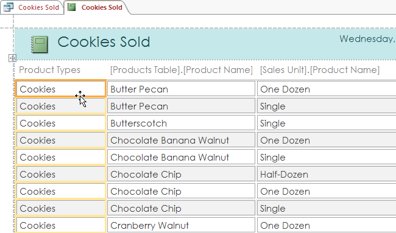
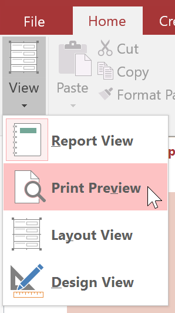
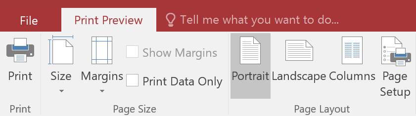
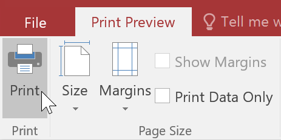
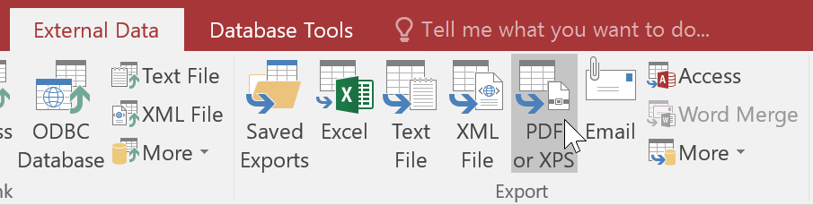
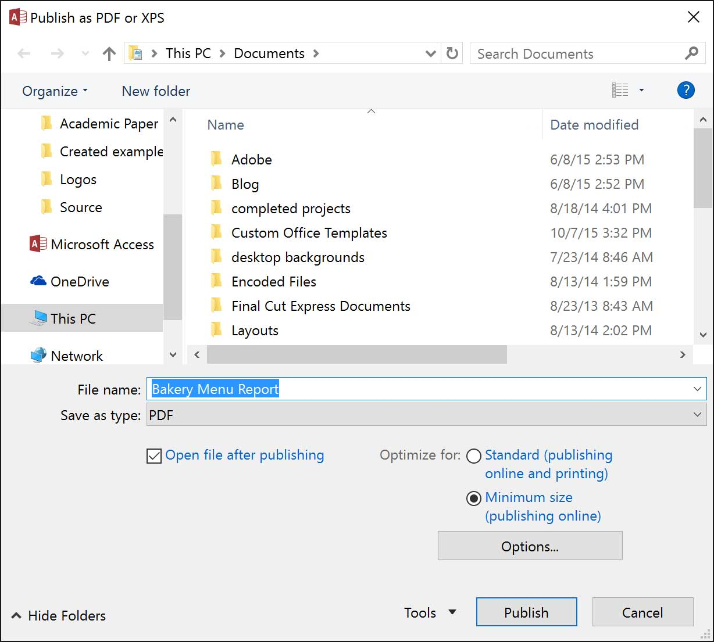

Dacă trebuie să partajați informații din baza de date cu cineva, dar nu doriți ca persoana respectivă să lucreze efectiv cu baza dvs.
de date, luați în considerare crearea unui raport . Rapoartele vă permit să vă organizați și să prezentați datele într-un format
ușor de citit, atrăgător din punct de vedere vizual.
Access facilitează crearea și personalizarea unui raport folosind date din orice interogare sau tabel din baza de date.
În această lecție, veți învăța cum să creați, să modificați și să tipăriți rapoarte.
-
Deschideți tabelul sau interogarea pe care doriți să o utilizați în raport.
Vrem să tipărim o listă de cookie-uri pe care le-am vândut, așa că vom deschide interogarea Cookies Sold.

-
Selectați fila Creare din Panglică. Găsiți grupul Rapoarte , apoi faceți clic pe comanda Raport.

-
Access va crea un nou raport bazat pe obiectul dvs.
-
Este posibil ca unele dintre datele dvs. să fie situate pe cealaltă parte a pauzei de pagină.
Pentru a remedia acest lucru, redimensionați câmpurile. Pur și simplu selectați un câmp,
apoi faceți clic și trageți marginea acestuia până când câmpul are dimensiunea dorită.
Repetați cu câmpuri suplimentare până când toate câmpurile dvs. se potrivesc.

-
Pentru a salva raportul, faceți clic pe comanda Salvare din bara de instrumente Acces rapid.
Când vi se solicită, introduceți un nume pentru raportul dvs., apoi faceți clic pe OK.

Este posibil să descoperiți că raportul dvs. conține anumite câmpuri pe care nu trebuie să le vizualizați.
De exemplu, raportul nostru conține câmpul Cod poștal , care nu este necesar într-o listă de comenzi.
Din fericire, puteți șterge câmpuri din rapoarte fără a afecta tabelul sau interogarea de unde ați preluat datele.
-
Faceți clic pe orice celulă din câmpul pe care doriți să o ștergeți, apoi apăsați tasta Ștergere de pe tastatură.

-
Câmpul va fi șters.
Deși puteți imprima rapoarte utilizând comenzi în vizualizarea Backstage, puteți utiliza și Previzualizarea imprimării.
Previzualizarea tipăririi vă arată cum va apărea raportul dvs. pe pagina tipărită.
De asemenea, vă permite să modificați modul în care este afișat raportul, să îl imprimați și chiar să îl salvați ca alt tip de fișier.
-
Din fila Acasă , faceți clic pe comanda Vizualizare, apoi selectați Previzualizare imprimare din lista derulantă.
Raportul dvs. va fi afișat așa cum va apărea pe pagina tipărită.

-
Dacă este necesar, modificați dimensiunea paginii, lățimea marginii și orientarea paginii utilizând comenzile aferente din Panglică.

-
Faceți clic pe comanda Print.

-
Va apărea caseta de dialog Print. Setați orice opțiuni de imprimare dorite, apoi faceți clic pe OK. Raportul va fi tipărit.
Puteți salva rapoarte în alte formate, astfel încât acestea să poată fi vizualizate în afara Access.
Acest lucru se numește exportarea unui fișier și vă permite să vizualizați și chiar să modificați rapoarte în alte formate și programe.
Access oferă opțiuni de salvare a raportului ca fișier Excel , fișier text , PDF și document HTML, printre alte tipuri de fișiere.
Experimentați cu diferite opțiuni de export pentru a găsi cea care se potrivește cel mai bine nevoilor dvs.
-
Din fila Acasă, faceți clic pe comanda Vizualizare, apoi selectați Previzualizare imprimare din lista derulantă.
-
Localizați grupul de date pe panglică.
-
Selectați una dintre opțiunile de tip de fișier sau faceți clic pe Mai
multe pentru a vedea opțiunile de salvare a raportului ca fișier Word sau HTML.

-
Va apărea o casetă de dialog. Selectați locația în care doriți să salvați raportul.
-
Introduceți un nume de fișier pentru raport, apoi faceți clic pe Publicare.

-
Va apărea o casetă de dialog pentru a vă anunța că fișierul dvs. a fost salvat cu succes.
Faceți clic pe Închidere pentru a reveni la raportul dvs.